Hardware Experiment
CADRE
DexPoint
CADRE - No IRA
Subsequent Screwdriver Turning
Ours: CADRE


Baseline: PointCloud


Baseline: DexPoint


Baseline: CADRE-EBM


Ablation: CADRE - No NDF


Ablation: CADRE - No IRA


Subsequent Hole-on-Peg
Ours: CADRE
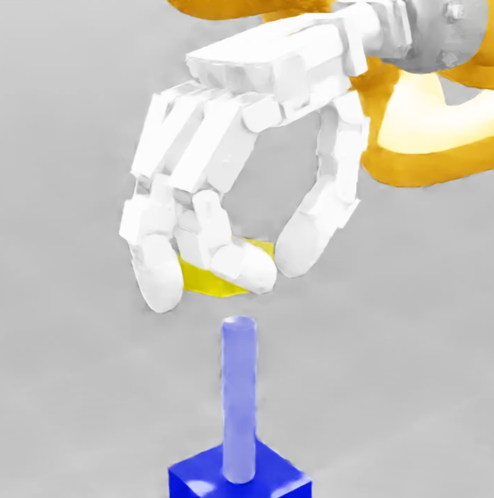
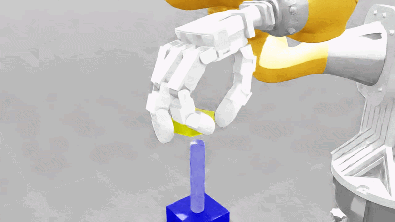
Baseline: PointCloud
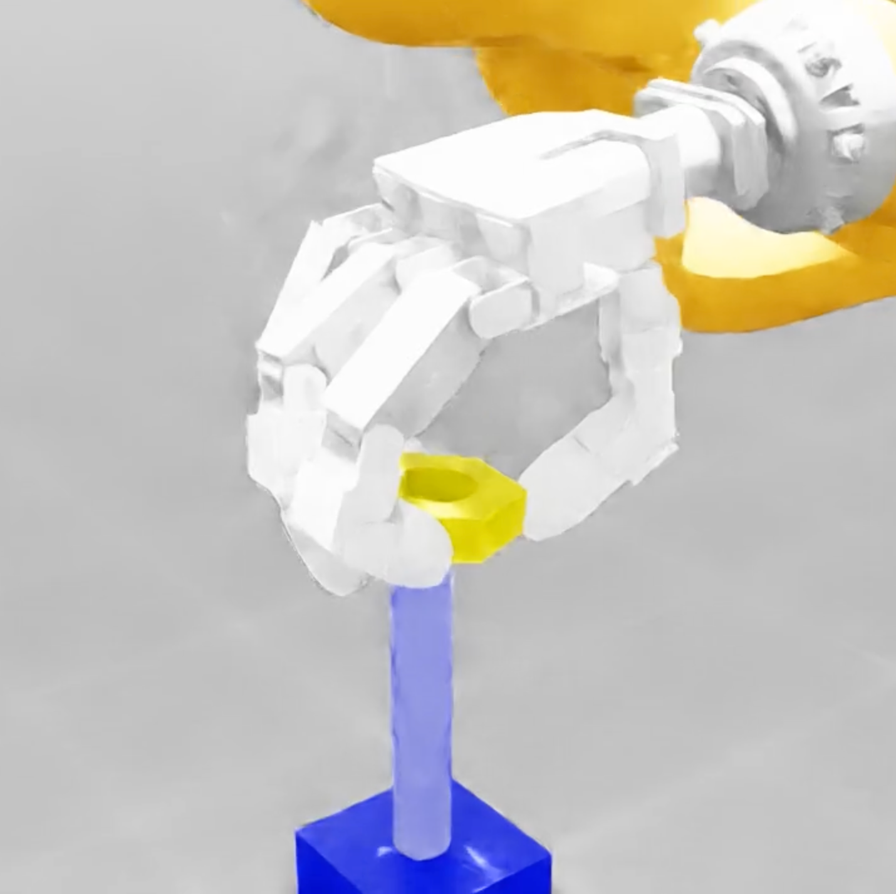
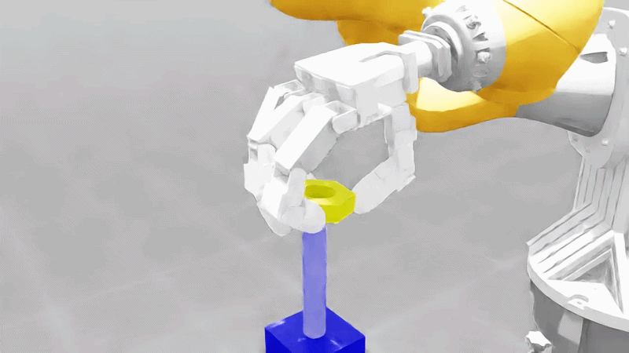
Baseline: DexPoint
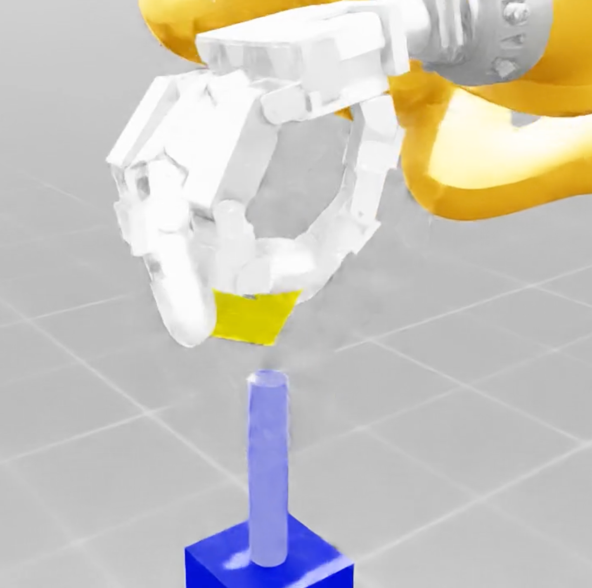
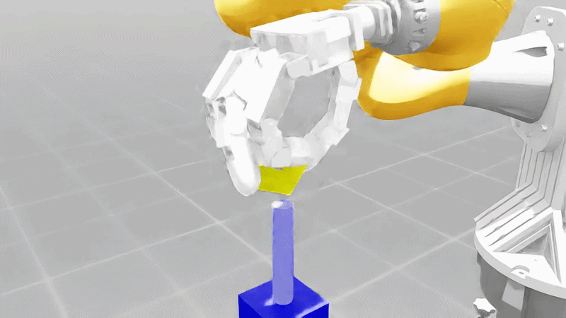
Baseline: CADRE-EBM
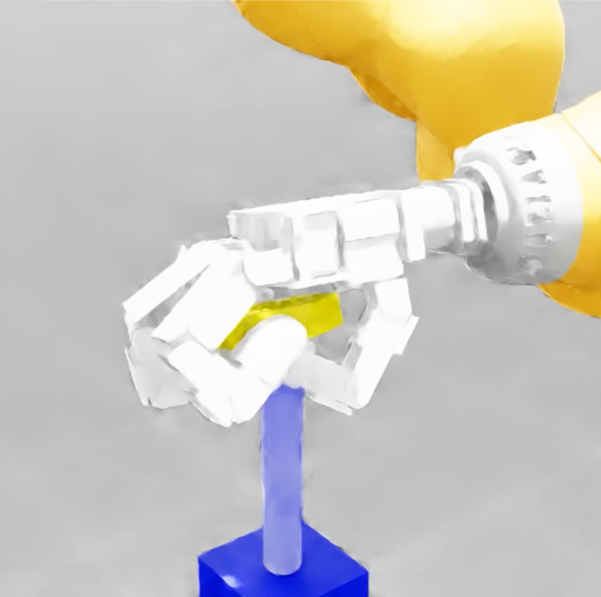
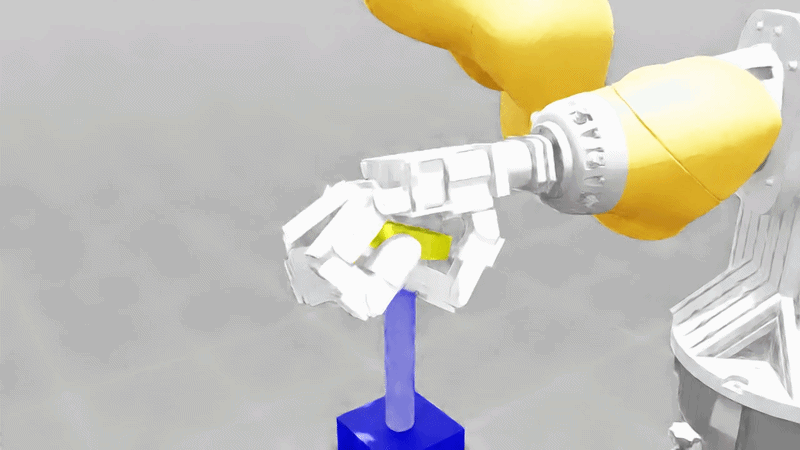
Ablation: CADRE - No NDF
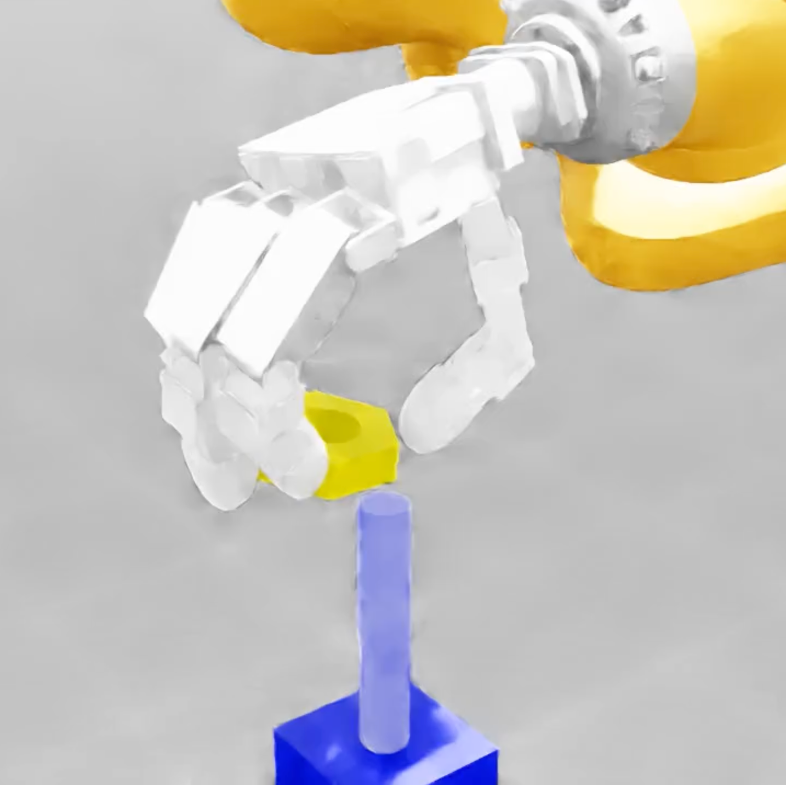
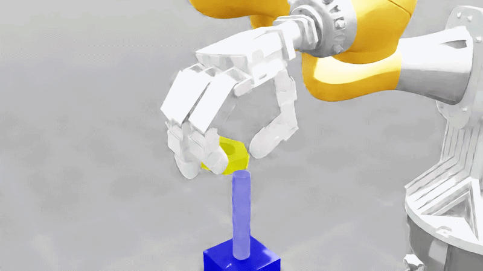
Ablation: CADRE - No IRA
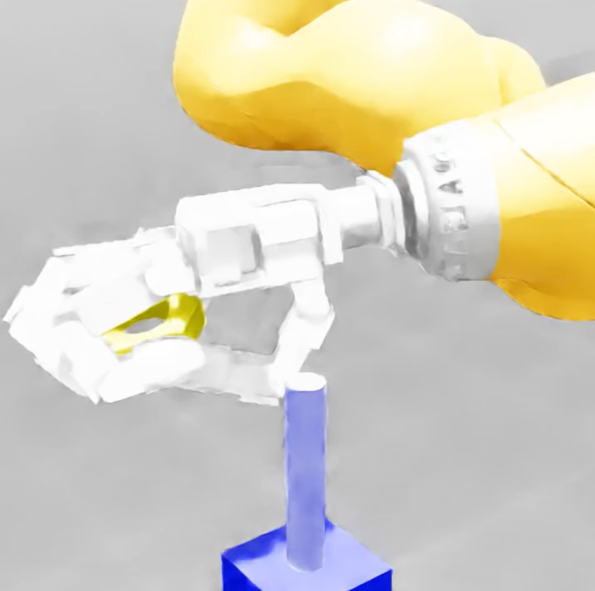
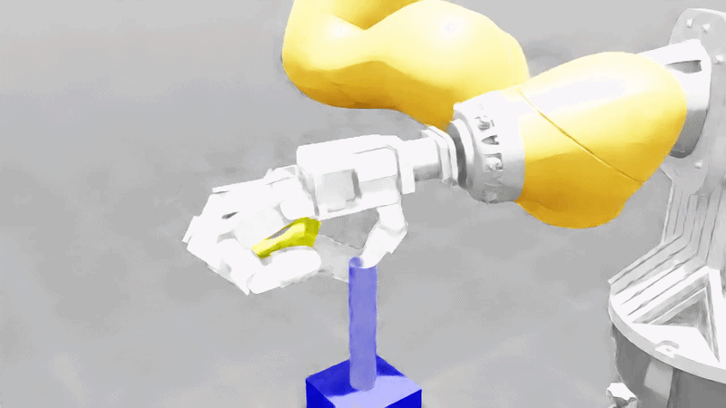